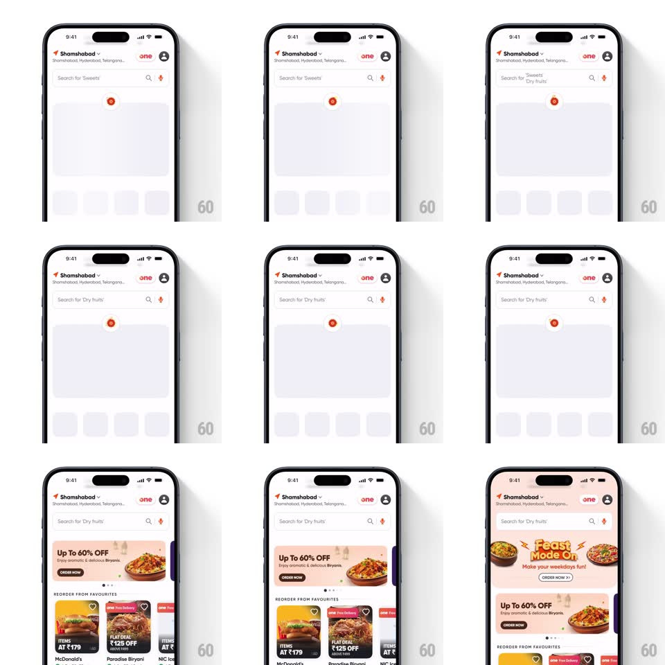

Media
Frame-by-frame

Rebuild this interaction 1:1: Swiggy's Diwali pull-to-refresh - dragging down from the food home reveals a spinning diya (oil lamp) loader with a flame that flickers, and on release the refreshed content staggers in over the skeleton placeholders.

Rebuild this interaction 1:1: Swiggy's Diwali pull-to-refresh - dragging down from the food home reveals a spinning diya (oil lamp) loader with a flame that flickers, and on release the refreshed content staggers in over the skeleton placeholders. ## Integration Integration: stack-agnostic spec - springs given as stiffness/damping, timed motions as duration + curve; map every value to your framework and animation library of choice. ## Scene The Swiggy food home (Shamshabad location header, Swiggy One badge, search bar "Search for 'Sweets'" / "'Dry fruits'"). Content area shows grey skeleton blocks (one wide banner block, a row of small tiles) while loading; loaded content is a biryani "Up To 60% OFF" banner, a "Feast Mode On" strip, and Reorder From Favourites cards (McDonald's, Paradise Biryani). ## Motion spec Pattern: themed pull-to-refresh. - Pull down: the content translates with the finger (1:1 with slight rubber-band resistance past 60pt) and the diya loader rises into the gap at top-center, its flame igniting (scale 0 -> 1, spring ~380/18) as you pass the trigger threshold. - Past threshold, the diya spins gently (rotate +/- 12deg oscillation, 800ms loop) with the flame flickering (scaleY 0.9-1.1 at ~6Hz, slight skew). - Release: content springs back up (spring ~360/22) while the diya keeps flickering in a compact loading row; skeleton blocks shimmer (left-to-right highlight sweep, 1.2s loop). - On data ready: skeletons crossfade out and real content staggers in - banner first, then strip, then card row (100ms between groups, fade + translateY 16pt -> 0, 350ms each). - The diya shrinks away (scale + fade, 250ms) as content lands. ## Calibration - The flame flicker must feel alive - randomize within the loop, not a metronome. - Trigger threshold ~80pt; cancel springs home without the loader if released early. ## Reduced motion Static diya icon with opacity pulse; content crossfades without stagger. ## Don't miss - The diya sits on a small rangoli-style arc motif that draws under it during the pull. - Skeleton blocks use the festive theme's warm grey tint, not the standard grey.